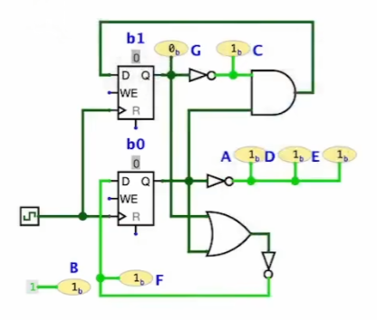

// Wires // A wire in digital circuits is used to connect different components // together, allowing the transmission of electrical signals between them. // A wire is represented as a boolean value (true or false), which // corresponds to high (1) and low (0) voltage levels in a real circuit. typedefbool wire;
// Flip-flops // A basic memory element in digital circuits, capable of storing one bit // of data. It has an input and an output (wires), and it maintains its // output value until the input changes and a clock signal is received. typedefstruct { bool value; // The current value stored in the flip-flop wire *in; // Pointer to the input wire wire *out; // Pointer to the output wire } reg;
// Logical gates from NAND // NAND gate is a fundamental building block in digital electronics. Using // NAND gates, one can construct any other logical operation.
// NAND gate: Returns true unless both inputs are true. #define NAND(X, Y) (!((X) && (Y)))
// NOT gate: Inverts the input. #define NOT(X) (NAND(X, 1))
// AND gate: Returns true only if both inputs are true. #define AND(X, Y) (NOT(NAND(X, Y)))
// OR gate: Returns true if at least one input is true. #define OR(X, Y) (NAND(NOT(X), NOT(Y)))
示例代码即可模拟如下的电路：

Code:
1 2 3 4 5 6 7 8 9 10 11 12 13
X1 = AND(NOT(X), Y); Y1 = NOT(OR(X, Y)); A = D = E = NOT(Y); B = 1; C = NOT(X); F = Y1; G = X;
cycle_end: // Handle traps and interrupts. if (trap) { if (trap & 0x80000000) { // It's an interrupt, not a trap. CSR(MCAUSE) = trap; CSR(MTVAL) = 0; pc += 4; // PC needs to point to where the PC will return to. } else { CSR(MCAUSE) = trap - 1; CSR(MTVAL) = (trap > 5 && trap <= 8) ? rval : pc; } CSR(MEPC) = pc; // On an interrupt, the system moves current MIE into MPIE CSR(MSTATUS) = ((CSR(MSTATUS) & 0x08) << 4) | ((CSR(EXTRAFLAGS) & 3) << 11); pc = (CSR(MTVEC) - 4);
// If trapping, always enter machine mode. CSR(EXTRAFLAGS) |= 3;
inthanoi(int n, char from, char to, char via) { Frame stk[64]; Frame *top = stk - 1;
// Function call: push a new frame (PC=0) onto the stack #define call(...) ({ *(++top) = (Frame){.pc = 0, __VA_ARGS__}; })
// Function return: pop the top-most frame #define ret(val) ({ top--; retval = (val); })
// The last function-return's value. It is not obvious // that we only need one retval. int retval = 0;
// The initial call to the recursive function call(n, from, to, via);
while (1) { // Fetch the top-most frame. Frame *f = top; if (top < stk) { // No top-most frame any more; we're done. break; }
// Jumps may change this default next pc. int next_pc = f->pc + 1;
// Single step execution.
// Extract the parameters from the current frame. (It's // generally a bad idea to reuse variable names in // practice; but we did it here for readability.) int n = f->n, from = f->from, to = f->to, via = f->via;
classProcess: def__init__(self, func, *args): # func should be a generator function. Calling # func(*args) returns a generator object. self._func = func(*args)
# This return value is set by the OS's main loop. self.retval = None
defstep(self): ''' Resume the process with OS-written return value, until the next system call is issued. ''' syscall, args, *_ = self._func.send(self.retval) self.retval = None return syscall, args
def__init__(self, src): # This is a hack: we directly execute the source # in the current Python runtime--and main is thus # available for calling. exec(src, globals()) self.procs = [OS.Process(main)] self.buffer = ''
defrun(self): whileself.procs: current = random.choice(self.procs)
try: # Operating systems handle interrupt and system # calls, and "assign" CPU to a process. match current.step(): case'read', _: current.retval = random.choice([0, 1]) case'write', s: self.buffer += s case'spawn', (fn, *args): self.procs += [OS.Process(fn, *args)] case _: assert0
except StopIteration: # The generator object terminates. self.procs.remove(current)